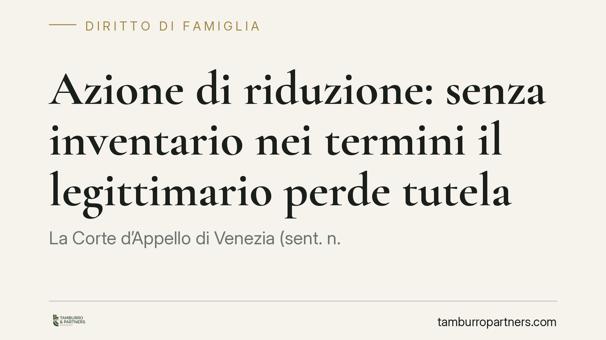

Azione di riduzione: senza inventario nei termini il legittimario perde tutela
La Corte d'Appello di Venezia (sent. n. 1475/2026) fissa un principio netto: il legittimario che accetta con beneficio d'inventario, ma non redige l'inventario nei termini di legge, diventa erede puro e semplice e perde la legittimazione ad agire in riduzione contro i terzi donatari non coeredi. Una svista procedurale che può azzerare la tutela della quota di legittima.

Il caso in breve
Un legittimario contestava alcune donazioni sostenendo che avessero eroso la propria quota di legittima, cioè la porzione di eredità che la legge riserva a determinati stretti congiunti (coniuge, figli, ascendenti). Per recuperarla aveva promosso l'azione di riduzione, lo strumento che consente di rendere inefficaci le disposizioni testamentarie o le donazioni eccedenti la quota disponibile.
La Corte d'Appello di Venezia ha però respinto la pretesa non nel merito, ma su un profilo preliminare: il legittimario aveva accettato l'eredità con beneficio d'inventario senza però redigere l'inventario nei termini imposti dalla legge. Questa omissione produce conseguenze pesanti.
Inquadramento normativo
Due norme del Codice civile sono al centro della decisione.
L'art. 487 c.c. prevede che l'erede il quale abbia dichiarato di accettare con beneficio d'inventario, ma non compia l'inventario nei termini stabiliti, sia considerato erede puro e semplice. Il beneficio d'inventario serve a tenere distinto il patrimonio del defunto da quello dell'erede, limitando la responsabilità per i debiti ereditari; se l'inventario non viene fatto, questa protezione decade e l'accettazione diventa piena.
L'art. 564 c.c. stabilisce una condizione fondamentale: il legittimario che agisce in riduzione contro donatari o legatari non coeredi deve avere accettato l'eredità con beneficio d'inventario. La Corte veneziana collega le due disposizioni: se l'inventario non è redatto nei termini, l'accettazione beneficiata si converte in accettazione pura e semplice (art. 487), viene quindi meno la condizione posta dall'art. 564 e il legittimario perde la legittimazione ad agire contro i terzi estranei alla comunione ereditaria.
La pronuncia affronta anche il tema delle donazioni indirette e delle dazioni di denaro tra parenti. La Corte richiede prova rigorosa dell'intento liberale (l'animus donandi): un trasferimento di denaro tra familiari non è automaticamente una donazione da conteggiare nella massa ereditaria. Occorre dimostrare che si trattava di un'attribuzione senza corrispettivo e con spirito di liberalità, non di un prestito, di un adempimento o di una restituzione.
Cosa cambia in concreto
Per chi si trova nella posizione di legittimario, il messaggio è chiaro: la strategia difensiva non parte dall'azione di riduzione, ma dalla corretta gestione dell'accettazione ereditaria.
Un errore procedurale nella fase iniziale — l'inventario mancato o tardivo — non è recuperabile in giudizio e può travolgere l'intera pretesa, indipendentemente dalla fondatezza nel merito. Il diritto alla legittima resta, ma si perde lo strumento per farlo valere verso i terzi donatari estranei all'eredità.
Attenzione anche ai termini. L'inventario deve essere completato entro i tempi previsti dalla legge, che variano a seconda che l'erede sia o meno nel possesso dei beni ereditari. La decorrenza va calcolata con precisione fin dal momento della dichiarazione di accettazione.
Sul fronte probatorio, chi contesta donazioni indirette o trasferimenti di denaro deve costruire un quadro documentale solido. Bonifici, causali, corrispondenza e scritture private diventano decisivi: senza prova dell'intento liberale, l'operazione non entra nel calcolo della massa.
Cosa fare in concreto
- Verificate la forma di accettazione prima di ogni azione. Se intendete agire in riduzione contro donatari non coeredi, accertatevi di avere accettato con beneficio d'inventario e di rispettare i termini.
- Redigete l'inventario nei tempi di legge. Annotate la data della dichiarazione e calcolate subito la scadenza; l'omissione converte l'accettazione in pura e semplice.
- Ricostruite la documentazione dei trasferimenti contestati. Raccogliete estratti conto, causali e ogni elemento utile a qualificare, o escludere, la natura di donazione.
- Distinguete la quota di legittima dalla legittimazione ad agire. Il diritto sostanziale e lo strumento processuale seguono regole diverse: entrambi vanno tutelati.
- Consigliamo una valutazione preliminare del quadro successorio prima di intraprendere qualsiasi iniziativa giudiziale, così da individuare i passaggi procedurali vincolanti.
Conclusione
La sentenza veneziana ribadisce un principio spesso sottovalutato: nella tutela della legittima la sequenza degli adempimenti conta quanto il merito. Un inventario tempestivo non è una formalità burocratica, ma la precondizione per far valere i propri diritti verso i terzi.
---
*Contributo informativo a cura di Tamburro & Partners - Avv. Giuseppe Tamburro. Non costituisce parere legale.*
Ogni famiglia ha il suo equilibrio.
Separazione, divorzio, affidamento, assegno: se vuoi un confronto riservato su una specifica situazione, scrivi allo studio. Ti rispondiamo entro un giorno lavorativo.